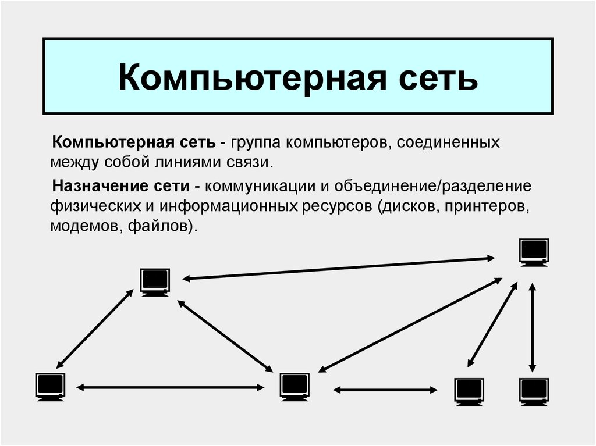
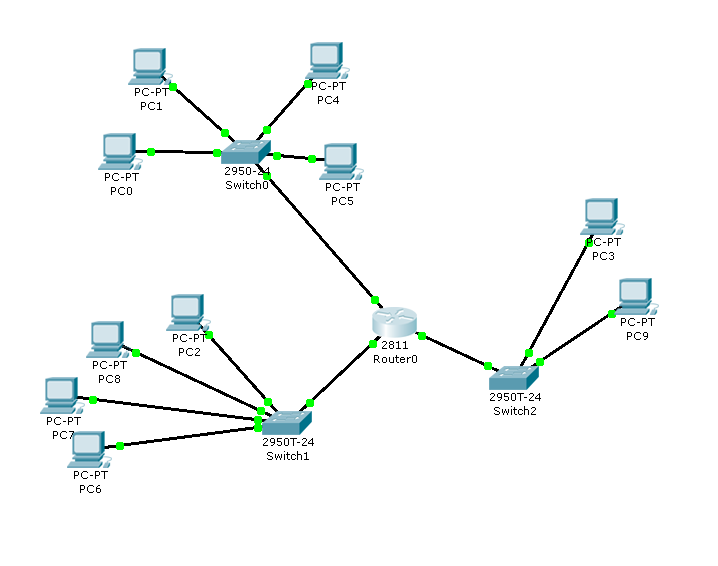

Главная страница
Введение
На этом сайте вы сможете узнать о принципах функциональной организации компьютерных сетей.
 Что такое маршрутизация?
Маршрутизация - это процесс выбора пути для передачи данных в сети. Рассмотрим основные методы маршрутизации.